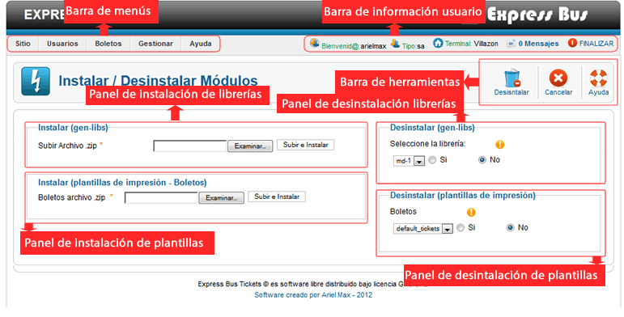
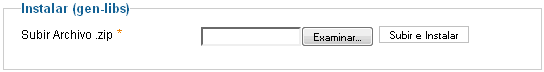
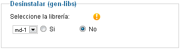
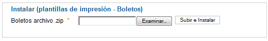
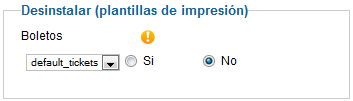

Ayuda Gestor de Instalación-Desinstalación
Contenido:
- Vista General
- Barra de Menús
- Barra de Información Usuario
- Barra de Herramientas
- Panel de Instalación gen-libs
- Panel de Desinstalción gen-libs
- Panel de Instalación Plantillas
- Panel de Desinstalación Plantillas
Vista General
Barra de Menús

La barra de menús nos permite tener un acceso direccto un sector del sistema, permite una mejor navegación por el sistema.
La barra de menús varia en base al tipo de usuario logeado (niveles), si ingresa el super admin tendra mayores opciones en la barra de menús, adiferencia de un usuario de nivel bajo solo vera la barra de menús relacionado con el cargo que este ocupa.
Barra de Información Usuario

La barra de información usuario nos muestra la información del usuario Logeado, también nos permite tener acceso directo a mensajesprovenientes de otros usuarios del sistema, podemos finalizar la aplicación de forma segura haciendo clic en Finalizar.
Barra de Herramientas
Esta el la barra de herramientas del gestor de Instalación-desinstalación, cada botón nos permite ejecutar una acción en concreto, a continuación explicamos el funcionamiento de cada botón.
 Desinstalar
Desinstalar
Este botón nos permite Desinstalar un módulo seleccionado.tenga precaución al utilizar esta opción el cambio es ireversible.
 Cancelar
Cancelar
Este botón nos redirecciona al menú principal.
Panel de Instalación gen-libs

Este panel de instalación nos permite instalar nuevos módulos de generación de asientos para los buses, express bus por defecto solo tiene un módulo de generación, para la creación de nuevos módulos se tendra que ver las caracteristicas de programación, mas información en el sistio del autor.
El módulo a instalar devera estar en formato .zip.
Para instalar un módulo, primero aga clic en examinar, busque en su equipo el archivo.zip, una vez seleccionada , presione el botón Subir e Instalar.
Panel de Desinstalación gen-libs
Este panel nos permite desinstalar un módulo de generación de asientos para los buses, si solo se cuenta con un módulo no se recomienda desisntalarlo afectaria la utilización del gestor de boletos.
Para desinstalar el módulo primero seleccione el módulo que desea desinstalar de la lista desplegable, seleccione la opción "si", por último aga clic en el botón Desinstalar.
Panel de Instalación de Plantillas
Este panel nos permite instalar nuevas plantillas de impresión para boletos , express bus por defecto trae una plantilla, para crear nuevas plantillas de impresion, se debe consultar el manual de programación, mas información en el sitio del autor.
Si solo se cuenta con una plantilla de impresión no se recomienda desinstalarlo esto causaria un mal funcionamiento de sistema.
Para instalar una plantilla, primero ubique que plantilla instalar Boletos, aga clic en examinar, busque en su equipo el archivo.zip, una vez seleccionada , presione el botón Subir e Instalar.
Panel de Desinstalación de Plantillas
Este panel nos permite desinstalar una plantilla de impresión de boletos , si posee una sola plantilla se recomienda que no desinstale esa plantilla podria causar un mal funcionamiento del sistema.
Para desinstalar una plantilla de impresión primero seleccione la plantilla que desea desinstalar de la lista desplegable, seleccione la opción "si", por último aga clic en el botón Desinstalar.